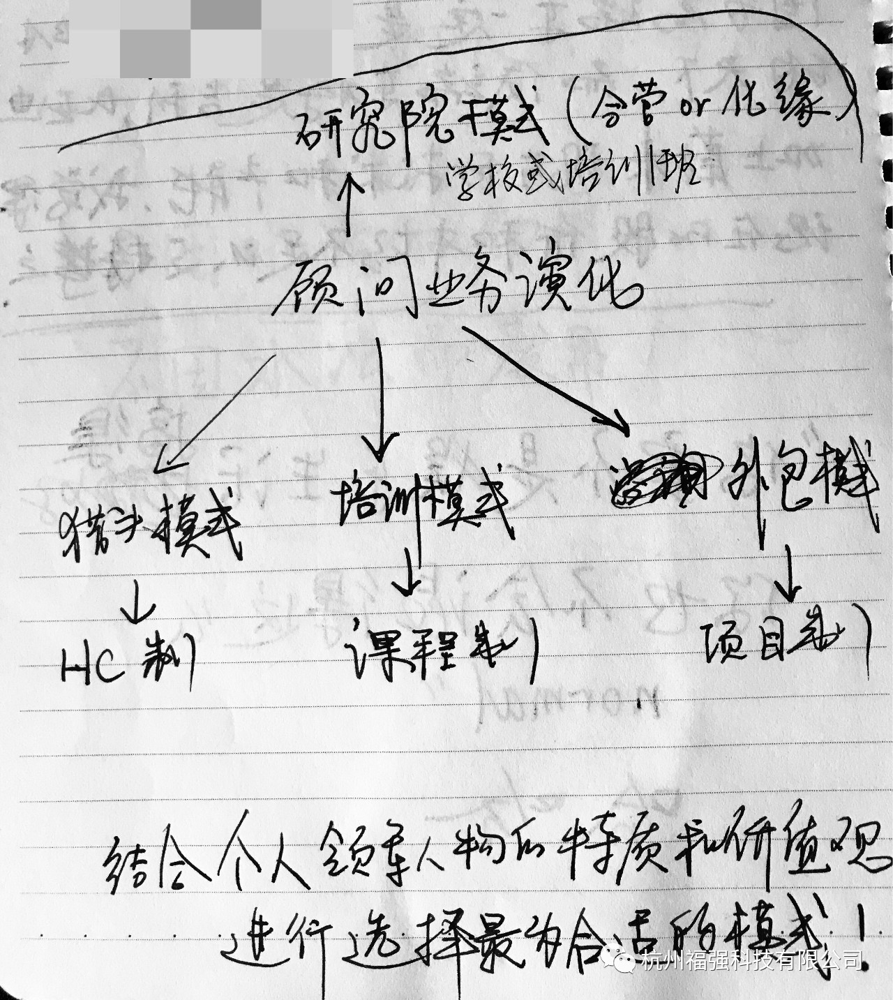
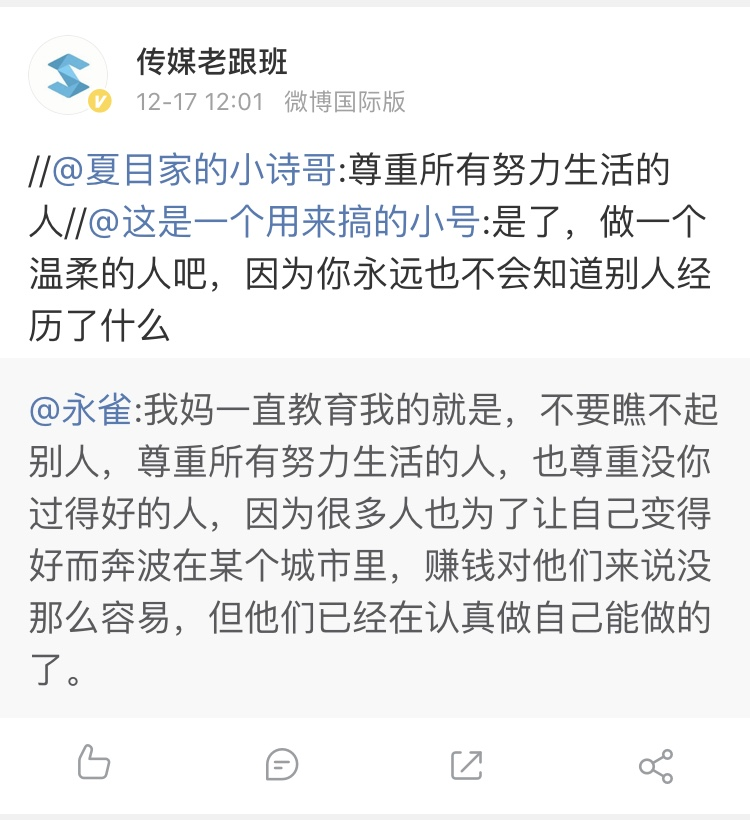

2017-12-28-关于创业的反思
王福强
关于找人，找钱，找方向
一直在自己找人聊，试图先找方向，然后再找钱和找人， 这几天在想，这样做是不是错了？
可能先找一个商务或者市场合伙人会更好一些？
有了人，再根据各自优势和相关资源来谋划方向，这样是不是更容易一些？
但找钱我永远不会放在第一位，因为资本不会雪中送炭，他们只愿意做锦上添花的事情，还不如自己的产品和业务做起来，让他们来找更好，相对来说，话语权上bargain的时候也更占优。
十多年的技术工作，处于企业业务的大后端，转而去做业务前端的事情， 确实是起步不易， 得做好”转行穷三年”的准备 ;0)
关于不确定性
做技术的时候，我不喜欢不确定的东西； 但创业之后，很多东西却都是不确定的， 所以，要么继续怀着某种安全感的诉求回到自己的心理舒适区， 要么就拥抱这种不确定性。 好在，我慢慢喜欢上创业中不确定性偶尔带来的小“惊喜”了…
关于资格资质
做2B市场的过程中，发现一个很重要的门槛： 资格和资质。 一个为企业服务的企业， 你的品牌没有起来之前，是需要靠获得相应的资格资质来逐步打入相关市场而立足，然后再强化品牌的。 而要获得相应的资格资质， 是需要投入钱和人的，单兵作战或者自己/自己的团队就算有实力, 也不是所有企业都认，尤其是大B企业。
关于顾问模式延伸出来的商业模式
这个之前也或多或少的说过， 比如CTO这个圈子里的1对1模式， 1对多模式（培训模式），以及多对多模式（EGO就是这种模式）， 但还有其他有意思的延伸模式，从现实中都能找到，这也验证了，很多时候不是谁比谁聪明，而是都是聪明人的时候，谁先走一步。
单纯顾问， 客户很难感知到你的软性价值， 所以，为了做好顾问，我们就得摸索哪些是客户可以看得见，感知的到的：
- 人员外包模式， 给用户提供方案的同时，派驻人员进驻，帮忙一起落实方案。 项目制模式归属此类。
- 传统企业很多都是这种模式，金融行业更是有着这种“优良”传统，银行，券商，保险，农信皆如此。
- 这种情况下，对企业资质是有要求的。
- 企业内训模式， 根据企业需求，为企业提供相应的技术，管理，销售，OD/OC等不同层面的内部培训服务。
- 这种是看得到的，也是做得最多的，极客帮企业培训部门在做，我自己做得最多的也是这种，只是前者是玩品牌和轻资产， 然后外包；我则是自营。 有点儿类似于阿里和京东的区别。
- 猎头模式，这个就不多说了，猎头本来就是人力资源垂直领域的顾问业务。
除此之外，我还没有摸索出更多更好的方式，因为本质上来说，顾问其实也是一种外包，只是相对来说专业工作外部化了，从title上听起来可能更高端一些， 像19楼跟关明生的顾问合作，其实也是内训+定期会议的模式进行，没有啥新模式。
总结下来，笔记本上画个草图，这个生态我看到的也就这个样子了：

关于谨言慎行
你永远不知道你对面的人跟哪个第三者之间是什么关系，所以， 不要说人坏话，不要说人坏话，不要说人坏话，重要的事情说三遍！
做技术可以直来直去， 做业务不行。
关于做人
感觉技术出身的自己，在做人层面确实差距很大。
之前，动不动跟人撕破脸，动不动锱铢必较，动不动瞧不起这个，瞧不起那个，确实都是自己做人层面修炼不够。
每个人都有自尊， 没有必要瞧不上这，瞧不上那，学会接纳差异性，容人，助人， 自己的世界也就更宽广了。
帮助别人比向别人索取，更有温度和成就感。
增补
下面这个snapshot是18年存的， 放这里感觉很合适， 只可惜我都是自己跌跌撞撞过来的，早有人教我这些道理或许会少走很多弯路吧 …

很多人讨厌国学，觉得迂腐，无用，其实，缺乏了人生智慧的指引，你科技再牛逼，人生路上依然会走很多的弯路， 踩更多的坑儿，因为科技是向外求的，生而为人，更需要向内求。
「为AI疯狂」星球上，扶墙老师正在和朋友们讨论有趣的AI话题，你要不要⼀起来呀？^-^
这里
- 不但有及时新鲜的AI资讯和深度探讨
- 还分享AI工具、产品方法和商业机会
- 更有体系化精品付费内容等着你，加入星球(https://t.zsxq.com/0dI3ZA0sL) 即可免费领取。(加入之后一定记得看置顶消息呀！)

存量的时代，省钱就是赚钱。
在增量的时代，省钱其实是亏钱。
避坑儿是省钱的一种形式，更是真正聪明人的选择！
弯路虽然也是路，但还是能少走就少走，背后都是高昂的试错成本。
订阅「福报」，少踩坑，少走弯路，多走一步，就是不一样的胜率！